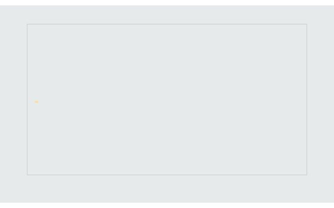

library(deviz)
library(gganimate)
#> Loading required package: ggplot2
library(ggplot2)
track <- mouse_df %>% dplyr::filter(type == "Move")
track$id <- 1:nrow(track)
anim <- ggplot(track, aes(x, y)) +
geom_point(
aes(color = id),
alpha = .6,
shape = 16,
size = 1.
) +
scale_x_continuous(expand = c(.01, .01)) +
scale_y_continuous(expand = c(.01, .01)) +
rcartocolor::scale_color_carto_c(
palette = "SunsetDark",
guide = "none"
) +
coord_fixed() +
theme_void() +
theme(
plot.title = element_text(
size = 15,
#vjust = 2,
hjust = 0,
face = "bold",
margin = margin(0, 0, 5, 0),
color = "#768a90"
),
plot.margin = margin(30, 45, 45, 45),
plot.background = element_rect(fill = "#e6eaeb", color = "#e6eaeb"),
panel.background = element_rect(fill = "#e6eaeb", color = "#cad2d4", size = 1)
) +
transition_time(id)
anim <- anim +
shadow_trail(0.005, size = 0.6, alpha = 0.3, colour = 'grey')
animate(anim,
render = gifski_renderer(),
height = 348,
width = 558,
fps = 40,
duration = 9)
library(deviz)
library(gganimate)
library(ggplot2)
ggkeyboard <- ggkeyboard::tkl
keys <- clean_keyboard(key_df, ggkeyboard)
keyboard <- ggkeyboard::ggkeyboard(ggkeyboard)
keyboard <- ggplot2::ggplot_build(keyboard)
keyboard <- purrr::map_dfr(keyboard$plot$layers[2:16], function(keyboard_data){
keyboard_data$data
}) %>% dplyr::distinct()
key_data <- keyboard %>%
dplyr::filter(key %in% !!keys$key) %>%
dplyr::left_join(keys, by = "key")
colors <- c("#F8F4D7", "#F4DEC2", "#F2B4A8", "#F4B36C", "#E98977")
test <- dplyr::left_join(keys, dplyr::select(key_data, key, x_start, x_end, y_start, y_end), by = "key") %>%
dplyr::distinct()
test = tibble::rowid_to_column(test, "ID")
ggkeyboard::ggkeyboard(ggkeyboard::tkl,
palette = ggkeyboard::keyboard_palette("magic"),
layout = c("ansi"),
font_family = "mono",
font_size = 3,
adjust_text_colour = TRUE,
measurements = ggkeyboard::keyboard_measurements("default")) +
ggnewscale::new_scale_fill() +
ggplot2::geom_rect(
data = test,
ggplot2::aes(
xmin = x_start, xmax = x_end,
ymin = y_start, ymax = y_end,
),
fill = "#e5e1e1",
size = 1,
alpha = 0.5
) +
scale_fill_gradientn("Number of key strokes", colours = colors) +
ggplot2::theme(legend.position = "bottom") +
ggplot2::guides(fill = ggplot2::guide_colorbar(title.position = "bottom",
title.hjust = 0.5,
barheight = 0.4,
barwidth = 10.4),
override.aes = list(alpha = 1)) +
transition_time(ID)